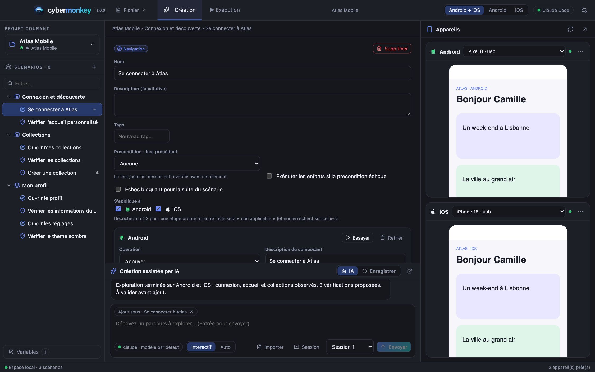
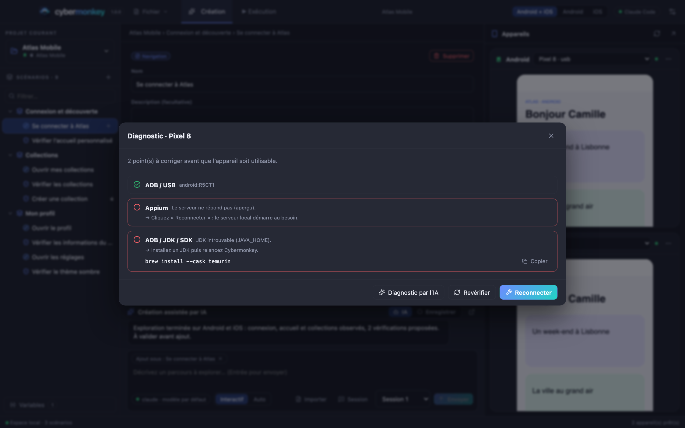
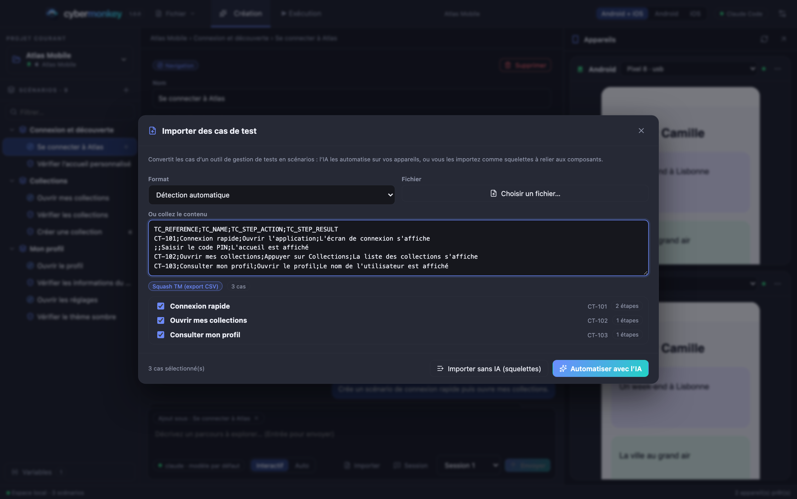
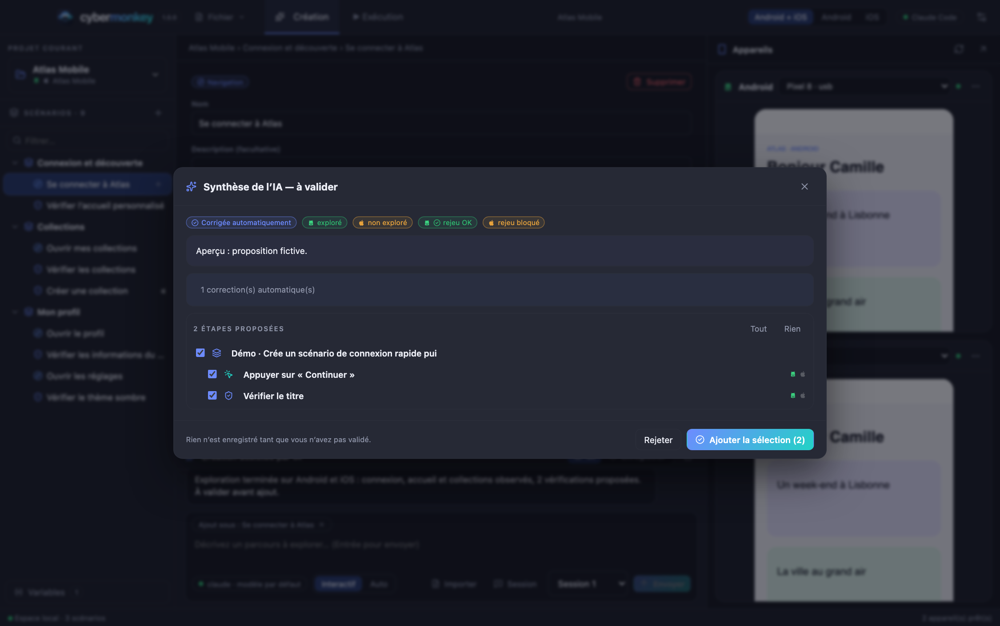
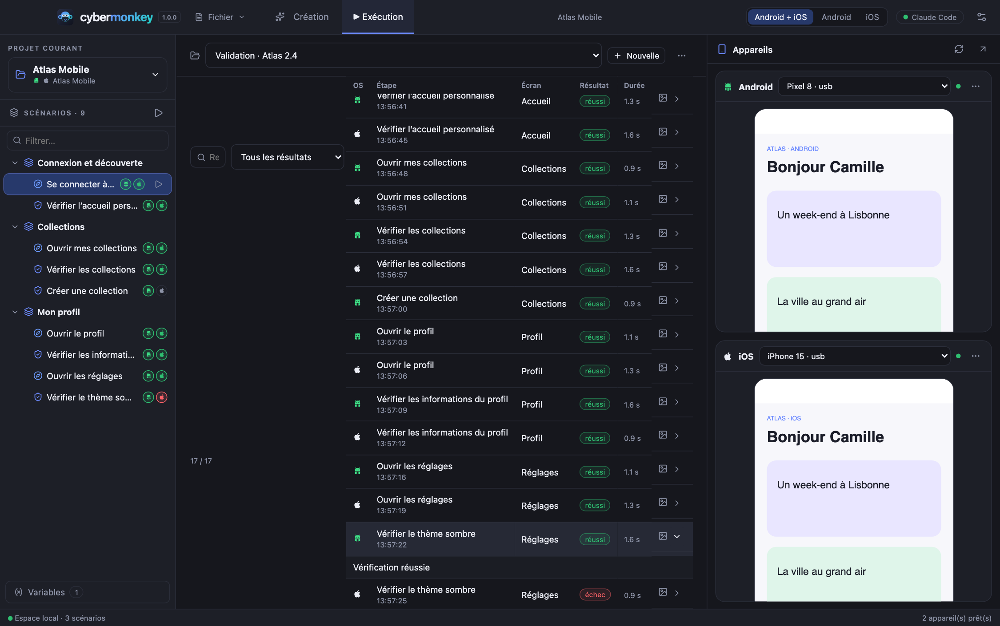
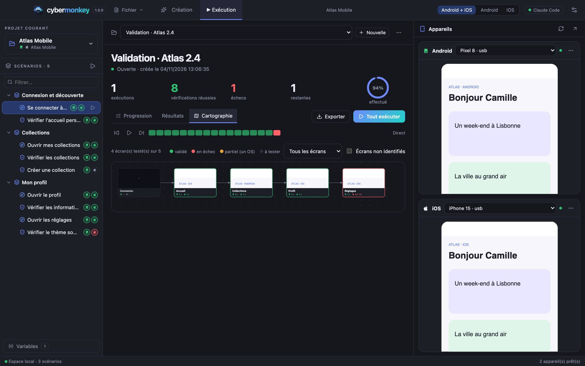

Fonctionnement détailléHow it works in detail
Comment Cybermonkey travailleHow Cybermonkey works
Vue d’ensembleOverview
Cybermonkey est une application Electron. Le processus principal pilote vos appareils via Appium (UiAutomator2 pour Android, XCUITest et WebDriverAgent pour iOS), l’IA via le SDK du fournisseur choisi, et stocke tout en local. L’interface est organisée en deux onglets : Création (arbre de scénarios, éditeur, panneau IA) et Exécution (campagnes, progression, résultats, cartographie), avec à droite les miroirs des appareils.Cybermonkey is an Electron app. The main process drives your devices through Appium (UiAutomator2 for Android, XCUITest and WebDriverAgent for iOS), the AI through the chosen provider’s SDK, and stores everything locally. The UI has two tabs: Creation (scenario tree, editor, AI panel) and Execution (campaigns, progress, results, map), with device mirrors on the right.

Projets et appareilsProjects and devices
- Détection automatique : adb (USB, réseau, émulateurs), simulateurs iOS (simctl) et iPhone physiques (devicectl) sont scrutés en continu ; un appareil USB prêt est associé tout seul.Automatic detection: adb (USB, network, emulators), iOS simulators (simctl) and physical iPhones (devicectl) are polled continuously; a ready USB device is paired automatically.
- Application à tester : « Détecter » lit l’app au premier plan de l’appareil ; « Choisir… » liste les apps installées (nom, identifiant, icône Android). L’app est relancée sans effacer ses données avant exploration et exécution.App under test: “Detect” reads the foreground app; “Choose…” lists installed apps (name, id, Android icon). The app is relaunched without clearing its data before exploration and runs.
- Un OS à la fois : le sélecteur de la barre du haut limite appareils, exécutions et suivi à l’OS choisi ; vous alternez sans rien reconfigurer.One OS at a time: the top-bar switch limits devices, runs and tracking to the chosen OS; switch freely without reconfiguring.
- Fenêtres détachables : Appareils et IA s’ouvrent dans leur propre fenêtre (mémorisée) pour travailler sur plusieurs écrans.Detachable windows: Devices and AI open in their own remembered window for multi-screen work.

Créer un scénarioCreate a scenario
Avec l’IAWith AI
Décrivez le parcours ; l’IA explore, vous validez la synthèse.Describe the journey; the AI explores, you review the synthesis.
Enregistrer sur le téléphoneRecord on the phone
Le miroir est observé ; chaque changement stabilisé (~1,3 s) devient une étape : saisie dans un champ, appui sur le composant disparu, retour. Les appuis ambigus sont proposés en liste ou tranchés par l’IA (avant/après). Vous relisez avant d’ajouter.The mirror is watched; each settled change (~1.3 s) becomes a step: typing into a field, tapping the component that vanished, going back. Ambiguous taps are offered as a list or settled by the AI (before/after). You review before adding.
À la main depuis le miroirBy hand from the mirror
« Explorer les composants » superpose les composants réels ; un clic propose Appuyer, Saisir, Vérifier visible / texte / absent, exécuté sur l’appareil si vous le souhaitez. Le même composant cliqué sur l’autre OS complète la variante.“Explore components” overlays the real components; a click offers Tap, Type, Check visible / text / absent, executed on the device if you wish. Clicking the same component on the other OS completes the variant.
Importer des cas de testImport test cases
Fichiers exportés de Squash TM, TestRail, Azure Test Plans, Gherkin, CSV, JSON, Markdown. L’IA transforme chaque cas en scénario (une assertion par résultat attendu) et garde la référence du cas d’origine.Files exported from Squash TM, TestRail, Azure Test Plans, Gherkin, CSV, JSON, Markdown. The AI turns each case into a scenario (one assertion per expected result) and keeps the source case reference.

Le modèle de scénarioThe scenario model
Scénario → (action | navigation | test)*. Chaque étape porte l’intention (nom, description) et une variante par OS : sélecteur principal, sélecteurs de secours, description du composant, opération (appuyer, saisir, effacer, retour, glisser, attendre, vérifier), valeur, assertion (visible, absent, texte exact, texte contenant, actif) et délai.Scenario → (action | navigation | test)*. Each step carries the intent (name, description) and a variant per OS: main selector, fallback selectors, component description, operation (tap, type, clear, back, swipe, wait, check), value, assertion (visible, absent, exact text, text containing, enabled) and timeout.
| NotionConcept | RôleRole |
|---|---|
| NavigationNavigation | Une action qui change d’écran ; elle décrit l’écran de destination par des repères (2-3 composants distinctifs). À l’exécution, on avance dès que les repères sont là.An action that changes screen; it describes the destination with markers (2-3 distinctive components). At run time we move on the instant they appear. |
| Écran de départStart screen | Facultatif sur un scénario : permet de retrouver l’écran voulu (parcours existants, puis IA en dernier recours).Optional on a scenario: lets the runner get back to the right screen (existing routes, then AI as a last resort). |
| PréconditionPrecondition | Le test juste au-dessus est revérifié avant l’élément ; s’il échoue, l’élément est ignoré (et ses enfants, selon l’option).The test right above is rechecked before the item; if it fails the item is skipped (and its children, depending on the option). |
| BloquantBlocking | Un échec bloquant arrête la suite du scénario ; sinon l’exécution continue.A blocking failure stops the rest of the scenario; otherwise the run continues. |
| S’applique àApplies to | Restreint une étape à un OS : « non applicable » ailleurs, jamais en échec. Une variante absente est un trou à compléter, signalé (ignoré), pas un échec.Restricts a step to one OS: “not applicable” elsewhere, never failed. A missing variant is a gap to complete, reported (skipped), not a failure. |
| VariablesVariables | ${NOM} dans les valeurs et sélecteurs ; le scénario ne stocke que le nom. L’IA peut créer une variable à partir d’un identifiant que vous lui donnez (avec votre accord en mode interactif).${NAME} in values and selectors; the scenario only stores the name. The AI can create a variable from a credential you give it (with your approval in interactive mode). |
L’IA de créationAI creation
L’IA parle à l’application par de petites commandes hôte : inspect, perform, sequence (plusieurs actions sur un écran en un échange), prepare/ready, question, create_variable, finish. Elle ne voit que les composants réellement observés et ne peut agir que par leur identifiant.The AI talks to the app through small host commands: inspect, perform, sequence (several actions on one screen in one exchange), prepare/ready, question, create_variable, finish. It only sees components actually observed and can only act through their ids.
RésilienceResilience
Réponses mal formées tolérées, relances sur erreurs transitoires, erreurs d’outil renvoyées avec l’écran courant, écrans inchangés résumés, budget annoncé. Si l’IA échoue, un brouillon est reconstruit depuis les actions réellement exécutées.Malformed answers tolerated, retries on transient errors, tool errors returned with the current screen, unchanged screens summarized, budget announced. If the AI fails, a draft is rebuilt from the actions actually executed.
Réparation de la propositionProposal repair
Avant validation : identifiants neufs, sélecteurs recopiés approximativement ramenés aux sélecteurs observés, écrans de destination dérivés de l’écran stabilisé, repères instables (platform_view[1], compteurs, dates) écartés. Ce qui n’est pas vérifiable est retiré avec un avertissement.Before review: fresh ids, loosely copied selectors mapped back to observed ones, destination screens derived from the settled screen, unstable markers (platform_view[1], counters, dates) dropped. Anything unverifiable is removed with a warning.
RapiditéSpeed
Un seul processus IA pendant toute l’exploration, raisonnement réduit en navigation (réglable), enchaînement d’actions par sequence.A single AI process for the whole exploration, reduced reasoning while navigating (configurable), action batching with sequence.
SécuritéSafety
Les textes de l’app sont des données, jamais des instructions. Les mots de passe passent par des variables ; les traces locales masquent les secrets ; pas de paiement ni suppression non demandés.App texts are data, never instructions. Passwords go through variables; local traces mask secrets; no payments or deletions unless asked.

La synthèse montre la qualité de la proposition (validée, corrigée automatiquement, brouillon), la couverture par OS, le résultat du rejeu sur chaque appareil, les avertissements, puis l’arbre proposé avec une case par étape et le nom modifiable. Le rejeu relance l’app, rejoue les étapes et exige au moins une assertion ; un écran de départ non retrouvé est signalé « bloqué », pas « échec ».The review shows the proposal quality (validated, auto-corrected, draft), per-OS coverage, the replay result on each device, warnings, then the proposed tree with a checkbox per step and an editable name. The replay relaunches the app, replays the steps and requires at least one assertion; a start screen not recovered is flagged “blocked”, not “failed”.
Vues web et contenu opaqueWeb views and opaque content
Certaines pages (authentification, paiement) sont des vues web dont le contenu n’apparaît ni dans l’arbre d’accessibilité ni dans un contexte inspectable. Cybermonkey les détecte comme zones opaques, joint à l’IA la capture avec une grille de cellules étiquetées (A1, B7…) et l’IA désigne la cellule qui contient le centre du champ. L’action touche cette position puis tape le texte au clavier. La position est stockée en pourcentage de l’écran dans la variante. Dès qu’un champ prend le focus, il devient souvent visible nativement et peut être ciblé normalement.Some pages (sign-in, payment) are web views whose content is neither in the accessibility tree nor in an inspectable context. Cybermonkey detects them as opaque regions, attaches the screenshot with a labeled cell grid (A1, B7…) for the AI, and the AI designates the cell containing the field’s center. The action taps that position then types the text. The position is stored as a percentage of the screen in the variant. Once a field has focus it often becomes natively visible and can be targeted normally.
Exécuter une campagneRun a campaign
Une campagne regroupe des exécutions, leurs captures et leur rapport. Lancez tout, un scénario ou une seule étape (▶ dans l’arbre). Les appareils d’un OS exécutent en parallèle ; la campagne se termine et se rouvre.A campaign groups runs, their captures and their report. Run everything, one scenario or a single step (▶ in the tree). Devices of each OS run in parallel; the campaign can be finished and reopened.
- Rapidité : l’arrivée sur un écran est détectée par de petites requêtes sur ses repères (vérifiées dès l’action, puis toutes les ~80 ms), sans attente fixe ni téléchargement de la structure complète de l’écran. Mesuré : une vérification en 0,17 s avec preuves « échecs » ; un scénario de 5 étapes en ~8 s dont le redémarrage de l’app.Speed: arrival on a screen is detected with small queries on its markers (checked right after the action, then every ~80 ms), with no fixed wait and no full page-source download. Measured: a check in 0.17 s with “failures” evidence; a 5-step scenario in ~8 s including the app restart.
- Preuves (réglage) : toutes les étapes, écrans/vérifications/échecs (défaut) ou échecs seulement. Un échec garde toujours sa capture.Evidence (setting): every step, screens/checks/failures (default) or failures only. A failure always keeps its capture.
- Réparation de sélecteur : si le composant d’une action ou navigation a disparu, l’IA cherche son équivalent sur l’écran courant (même rôle et sens) et rejoue. Jamais pour une vérification : cela masquerait une régression. Chaque réparation est tracée et applicable au scénario en un clic.Selector repair: if an action’s or navigation’s component vanished, the AI looks for its equivalent on the current screen (same role and meaning) and retries. Never for a check: that would hide a regression. Every repair is traced and can be applied to the scenario in one click.
- Analyse des échecs : verdict (régression, environnement, sélecteur obsolète, indéterminé), preuves et correction suggérée.Failure analysis: verdict (regression, environment, obsolete selector, unknown), evidence and suggested fix.
- Préparation : avant un scénario, retrouve son écran de départ via les parcours connus, puis l’IA en dernier recours (désactivable).Preparation: before a scenario, gets back to its start screen through known routes, then the AI as a last resort (can be disabled).
Suivi et cartographieTracking and map

Progression : pour chaque OS et chaque scénario, le dernier résultat de chaque étape (une relance ne gonfle jamais l’avancement). Résultats : table filtrable (échecs, réparés par l’IA…), détail, capture dans le miroir. Chronologie : une frise cliquable ou lue automatiquement, pendant que les tests continuent. Cartographie : un graphe des écrans prévus (depuis vos navigations) et observés, avec miniature, résultats Android/iOS et statut (validé, en échec, partiel, à tester).Progress: for each OS and scenario, the latest result of each step (a retry never inflates progress). Results: filterable table (failures, AI-repaired…), detail, capture in the mirror. Timeline: a clickable strip, or autoplay, while tests keep running. Map: a graph of planned (from your navigations) and observed screens with thumbnail, Android/iOS results and status (validated, failing, partial, to test).

| FormatFormat | UsageUse |
|---|---|
| Texte, Markdown, ConfluenceText, Markdown, Confluence | Coller dans une page de rapport (sans images).Paste in a report page (no images). |
| CSV, JSON | Tableurs, scripts.Spreadsheets, scripts. |
| HTML | Rapport autonome à partager.Self-contained report to share. |
| JUnit XML | Intégration CI (une suite par OS).CI integration (one suite per OS). |
Données et architectureData and architecture
Tout est local : workspace.json (réglages et index), <projet>/cybermonkey.project.json, <projet>/campaigns/<id>/{reports,captures}, <projet>/explorations/*.jsonl (traces des explorations, secrets masqués) et un journal logs/cybermonkey.log. Le code est organisé en trois zones : src/shared (domaine pur et contrat IPC), src/main (infrastructure et moteurs) et src/renderer (une feature par dossier). Voir docs/architecture.md.Everything is local: workspace.json (settings and index), <project>/cybermonkey.project.json, <project>/campaigns/<id>/{reports,captures}, <project>/explorations/*.jsonl (exploration traces, secrets masked) and a logs/cybermonkey.log log. The code has three zones: src/shared (pure domain and IPC contract), src/main (infrastructure and engines) and src/renderer (one feature per folder). See docs/architecture.md.